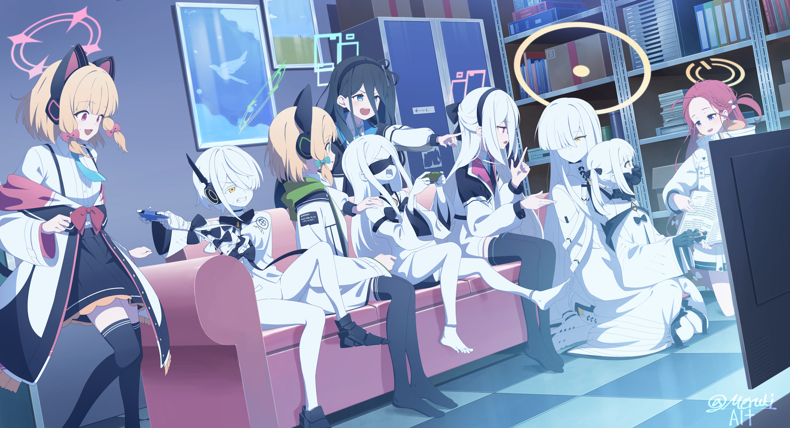

Cafe Launcher · 设置 / 外观 · M3 语义样张
浅色
深色
设置
常规
游戏
下载与网络
外观
高级
关于
外观
设置选项更改后需保存。
主题与动效
外观主题
跟随系统
浅色
深色
动态效果
控制界面动画和轮播图自动播放
跟随系统
跟随系统
完整动态效果
减少动态效果
背景
背景
启动器背景来源。
内置默认
远程
自定义

当前背景
自定义图片 · 1920 × 1080
C:\Users\me\Pictures\launcher-background.png
自定义背景
选择图片或视频，也可从文件夹随机选择背景。
选择图片或视频
选择文件夹
壁纸适配方式
拉伸填充
适应
覆盖
壁纸背景色
使用「适应」模式时，壁纸周围的填充颜色。
打开调色板
主题配色
主题色
用于按钮、进度、链接和高亮的强调色
从壁纸获取
默认
跟随系统
从壁纸获取
自定义
壁纸色板
从当前背景图提取主题色并选择使用
高级配色
取色算法、配色变体与中性色
取色算法
从壁纸提取种子色时使用的算法
M3 Celebi + Score
M3 Celebi + Score
Wu
Wsmeans
Octree（旧版）
配色变体
生成 M3 配色方案时使用的风格
TonalSpot
TonalSpot
Vibrant
Expressive
Fidelity
Content
Monochrome
Neutral
Rainbow
中性色
使用默认中性色，或根据当前主题色生成中性色。
对话框背景、文字和输入框使用主题中性色，颜色和深浅会随主题及配色变体变化。
默认
跟随主题色
设置已保存